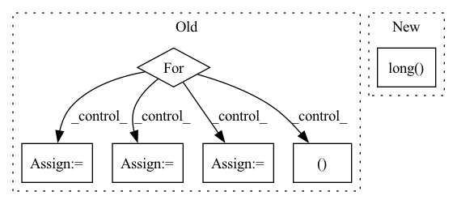

Pattern ID :11681

Before Change
total_greedy_list = list(np.array(total_greedy_list)[rand_indices])
gammas = list(np.array(gammas)[rand_indices])
elif self.selection_type == "Supervised":
for i in range(self.num_classes):
if i == 0:
idxs = torch.where(labels == i)[0]
N = len(idxs)
self.compute_score(model_params, idxs)
row = idxs.repeat_interleave(N)
col = idxs.repeat(N)
data = self.dist_mat.flatten()
else:
idxs = torch.where(labels == i)[0]
N = len(idxs)
self.compute_score(model_params, idxs)
row = torch.cat((row, idxs.repeat_interleave(N)), dim=0)
col = torch.cat((col, idxs.repeat(N)), dim=0)
data = np.concatenate([data, self.dist_mat.flatten()], axis=0)
sparse_simmat = csr_matrix((data, (row.numpy(), col.numpy())), shape=(self.N_trn, self.N_trn))
self.dist_mat = sparse_simmat
fl = apricot.functions.facilityLocation.FacilityLocationSelection(random_state=0, metric="precomputed",
After Change
total_greedy_list = list(np.array(total_greedy_list)[rand_indices])
gammas = list(np.array(gammas)[rand_indices])
elif self.selection_type == "Supervised":
idxs = torch.arange(0, self.N_trn).long()
N = len(idxs)
self.compute_score(model_params, idxs)
row = idxs.repeat_interleave(N)
col = idxs.repeat(N)
In pattern: SUPERPATTERN
Frequency: 3
Non-data size: 6
Instances
Fragment ID: 39514202
Project Name: decile-team/cords
Commit Name: 0b9fa0d7a62b59ab3d740399460db130d1d933ad
Time: 2021-11-10
Author: krishnateja.killamsetty@utdallas.edu
File Name: cords/selectionstrategies/SL/craigstrategy.py
M Class Name: CRAIGStrategy
N Class Name: CRAIGStrategy
M Method Name: select(3)
N Method Name: select(3)
M Parent Class: DataSelectionStrategy
N Parent Class: DataSelectionStrategy
M File Name: cords/selectionstrategies/SL/craigstrategy.py
N File Name: cords/selectionstrategies/SL/craigstrategy.py
M Start Line: 276
M End Line: 291
N Start Line: 276
N End Line: 281
'>
Before Change
total_greedy_list = list(np.array(total_greedy_list)[rand_indices])
gammas = list(np.array(gammas)[rand_indices])
elif self.selection_type == "Supervised":
for i in range(self.num_classes):
if i == 0:
idxs = torch.where(labels == i)[0]
N = len(idxs)
self.compute_score(model_params, idxs)
row = idxs.repeat_interleave(N)
col = idxs.repeat(N)
data = self.dist_mat.flatten()
else:
idxs = torch.where(labels == i)[0]
N = len(idxs)
self.compute_score(model_params, idxs)
row = torch.cat((row, idxs.repeat_interleave(N)), dim=0)
col = torch.cat((col, idxs.repeat(N)), dim=0)
data = np.concatenate([data, self.dist_mat.flatten()], axis=0)
sparse_simmat = csr_matrix((data, (row.numpy(), col.numpy())), shape=(self.N_trn, self.N_trn))
self.dist_mat = sparse_simmat
fl = apricot.functions.facilityLocation.FacilityLocationSelection(random_state=0, metric="precomputed",
After Change
total_greedy_list = list(np.array(total_greedy_list)[rand_indices])
gammas = list(np.array(gammas)[rand_indices])
elif self.selection_type == "Supervised":
idxs = torch.arange(0, self.N_trn).long()
N = len(idxs)
self.compute_score(model_params, idxs)
row = idxs.repeat_interleave(N)
col = idxs.repeat(N)
'>
Fragment ID: 39514234
Project Name: decile-team/cords
Commit Name: 0b9fa0d7a62b59ab3d740399460db130d1d933ad
Time: 2021-11-10
Author: krishnateja.killamsetty@utdallas.edu
File Name: cords/selectionstrategies/SL/craigstrategy.py
M Class Name: CRAIGStrategy
N Class Name: CRAIGStrategy
M Method Name: select(3)
N Method Name: select(3)
M Parent Class: DataSelectionStrategy
N Parent Class: DataSelectionStrategy
M File Name: cords/selectionstrategies/SL/craigstrategy.py
N File Name: cords/selectionstrategies/SL/craigstrategy.py
M Start Line: 276
M End Line: 291
N Start Line: 276
N End Line: 281
'>
Before Change
with record_function("(zhg) categorize indices"):
chunk_id_set = set()
chunk_counter = dict()
for id in ids:
chunk_id, offset_in_chunk = self.index_mapping_table[id]
chunk_id_set.add(chunk_id)
if chunk_id not in chunk_counter:
chunk_counter[chunk_id] = 1
else:
chunk_counter[chunk_id] += 1
assert len(chunk_id_set) <= self.cuda_chunk_num, \
f"the input indices pull {len(chunk_id_set)} chunks, " \
After Change
self.evict_backlist.clear()
// new ids chunk_offset + offset_in_chunk
with record_function("(zhg) embed idx -> cache chunk id"):
mapped_ids = self._id_to_cached_cuda_id(ids).long().view(ids.shape)
return mapped_ids
def _prepare_chunks_on_cuda(self, chunk_ids: List[int]) -> None:
'>
Fragment ID: 39514239
Project Name: hpcaitech/cachedembedding
Commit Name: 5062f1cff105e81702e90439e652d412e4950718
Time: 2022-07-25
Author: fangjiarui123@gmail.com
File Name: recsys/modules/embeddings/chunk_param_mgr.py
M Class Name: ChunkParamMgr
N Class Name: ChunkParamMgr
M Method Name: prepare_ids(2)
N Method Name: prepare_ids(2)
M Parent Class: object
N Parent Class: object
M File Name: recsys/modules/embeddings/chunk_param_mgr.py
N File Name: recsys/modules/embeddings/chunk_param_mgr.py
M Start Line: 126
M End Line: 165
N Start Line: 152
N End Line: 189